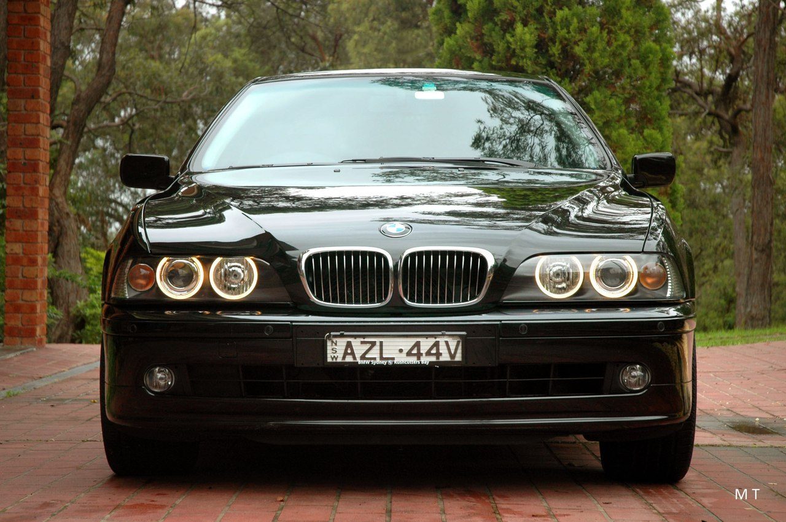
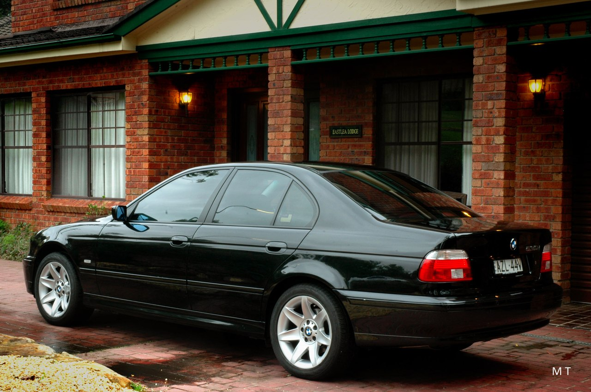

BMW E39
BMW E39 является четвертым поколением седанов 5 серии и производилась с 1995 по 2003 годы. БМВ Е39 стала преемником E34 и в Европе была доступна с 1995 года, а к 1996 году и в остальных странах мира. За все время производства было выпущено 1 533 123 автомобилей.
Дизайнером автомобиля был Joji Nagashima. Развитие преемника E34, внутренне известный как «Entwicklung 39» начались ещё в начале 1989 года и закончилась в 1995 году. Окончательный проект был утвержден в 1993 году, патент дизайна было подано 20 апреля 1994 года.

- 
- 
Модельный ряд BMW E39
BMW E39 Sedan
Дизайн автомобиля в строительстве кузова и электронных технологий опирается в значительной степени на E38 7 серии и разработан таким образом, что частота для кручения и изгиба находятся в отдельных диапазонах и выше собственной частоты.. Кузов автомобиля действует как каркас безопасности для защиты водителя и пассажиров.
Структурная жесткость монокока была увеличена использованием компьютерного моделирования. Это позволило усилить ключевые моменты, для увеличения жесткости, без значительного добавления веса. Общее увеличение на 10 килограммов компенсировалось алюминиевой подвеской. Методы лазерной сварки обеспечили жесткую связь по всему кузову. Другим направлением в разработке кузова была — динамика автомобиля.
Коэффициент сопротивления к примеру 528i и 540i — 0,28 и 0,31. Для моделей 520i — 530i, впервые в 5 серии используется реечное рулевое управление. Это не только обеспечивает снижение веса, но и гарантирует более быстрый отклик руля на поворотах, а также более точную чувствительность в управлении в целом.
Для европейского рынка предлагались 520i, 523i, 525i, 528i, 530i, 535i, 540i, 525tds, 520d, 525d, 530d и «заряженная» M5. Для североамериканского рынка были доступны только 525i, 528i, 530i, 540i и M5. 540i Protection с легким бронированием была предназначена для экспорта.